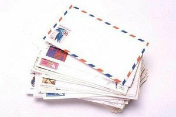

Безопасность! Дом!
Ведь стоит преступнику взломать почтовый ящик, как он, просмотрев Вашу корреспонденцию, уже знает, как Вас зовут. А если ему станут известны Ваше имя и Ваш адрес, то он легко сможет узнать в справочном бюро номер Вашего телефона. Дальше – дело за малым: преступник звонит к Вам домой, и если никто не снимает трубку – значит, он может спокойно забираться в Ваш дом. Лучше всего почтовый ящик вешать на внутреннюю сторону входной двери – но таким образом, чтобы через прорезь в двери нельзя было заглянуть с улицы в дом, и, чтобы, в прорезь нельзя было просунуть толстый пакет.
Пожалуйста, будьте внимательны с полученной Вами корреспонденцией. Письма-бомбы являются сейчас одним из самых популярных террористических средств.
В любом случае подозрительная упаковка должна быть положена на плоскую поверхность, как можно дальше от дома, на открытом пространстве, а если это невозможно, то в комнате, близкой к двери дома. Помните – подозрительный пакет нельзя помещать в воду и вблизи источников тепла. И, самое главное, - вскрытие должны осуществлять специалисты!
И еще: будьте особо внимательны, если посылку или пакет к Вам в дом приносит незнакомый человек! Например, новый почтальон. Не стесняйтесь, позвоните на почту и узнайте причину смены почтальона. В любом случае, незнакомого поставщика нельзя пускать в дом! А теперь представьте себе, что Вы получили письмо без подписи, то есть анонимное. И в нем Вы почувствовали угрозу. Что делать?  Сначала, оцените ситуацию. Если текст письма действительно несет в себе опасность Вам и Вашим близким. Немедленно примите меры предосторожности: Завесьте окна шторами (возможно, за Вашей квартирой наблюдают) Проверьте надежность замков всех дверей, запоров на окнах. Подготовьте средства самообороны в квартире (палка, резиновая груша с раствором лимонной кислоты и т.п.) Предупредите своих близких, находящихся на улице. И вызовите детей с улицы. Зайдите к соседям. Которым Вы доверяете, расскажите им о случившемся происшествии и попросите помочь. Позвоните от них в городской уголовный розыск или управление ФСБ (либо попросите сделать это соседей) и договоритесь о встрече с сотрудниками этих органов и о Ваших дальнейших действиях. Если у вас есть подозрение на конкретное лицо, а текст письма не несет в себе явной угрозы, письменно сообщите об этом в милицию, потребуйте вызвать автора письма для официального предупреждения. Не используйте свой телефон для разговоров, связанных с этой ситуацией (он может прослушиваться злоумышленниками). Предупредите своих близких, но только тех, кого это непосредственно касается. Повысьте свою осторожность. Попросите друзей подстраховывать Вас дома и на улице, всегда сообщайте им, куда Вы направляетесь и когда вернетесь. Позаботьтесь о безопасности своих близких, выпускайте детей из дома только в сопровождении взрослых. Не используйте для передвижения попутные машины, такси вызывайте на дом по телефону соседей. Желательно исключить загородные прогулки и возвращаться домой до наступления темноты. Попросите соседей сообщать Вам обо всех визитах посторонних, а так же касающихся Вас телефонных звонках. Расскажите на работе своему начальнику о случившемся происшествии для объяснения Ваших возможных действий или изменения графика работы. Ведите себя спокойно и естественно, выполняйте все рекомендации правоохранительных органов до полного устранения угрозы.